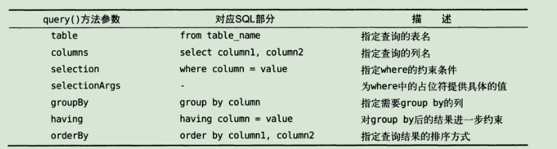

持久化技术详解 持久化技术简介 数据持久化就是指将那些内存中的瞬时数据保存到存储设备中，保证即使在手机或电脑关机的情况下，这些数据仍然不会丢失。
保存在内存中的数据是处于瞬时状态的，而保存在存储设备中的数据是处于持久状态的，持久化技术则提供了一种机制可以让数据再瞬时状态和持久状态之间进行转换。
Android系统中主要提供了3种方式用于简单地实现数据持久化功能，即文件存储、sharedPreference存储以及数据库存储。
文件存储 文件存储是Android中最基本的一种数据存储方式，它不对存储的内容进行任何的格式化处理，所有的数据都是原封不动地保存到文件当中的。
将数据存储到文件中 Context类提供了一个openFileOutput()方法，可以用于将数据存储到指定的文件中。这个方法有两个参数，第一个是文件名（注意，不可以包含路径，默认都是存储到/data/data/<packagename>/files/目录下的），第二个超时的文件的操作模式，可选的有MODE_PRIVATE（默认的操作方式，为覆写模式）和MOD_APPEND（为追加模式）。
openFileOutput()方法返回的是一个FileOutputStream对象，得到这个对象之后就可以使用java流的方式将数据写到文件中了。
下面新建一个FilePersistenceTest项目，并添加EditText控件：
1 2 3 4 5 6 7 8 9 10 11 12 13 14 <?xml version="1.0" encoding="utf-8"?> <LinearLayout xmlns:android ="http://schemas.android.com/apk/res/android" android:orientation ="vertical" android:layout_width ="match_parent" android:layout_height ="match_parent" > <EditText android:id ="@+id/edit" android:layout_width ="match_parent" android:layout_height ="wrap_content" android:text ="Type something here" /> </LinearLayout >
然后修改MainActivity中的代码：
1 2 3 4 5 6 7 8 9 10 11 12 13 14 15 16 17 18 19 20 21 22 23 24 25 26 27 28 29 30 31 32 33 34 35 public class MainActivity extends AppCompatActivity private EditText edit; @Override protected void onCreate (Bundle savedInstanceState) super .onCreate(savedInstanceState); setContentView(R.layout.activity_main); edit = (EditText) findViewById(R.id.edit); } @Override protected void onDestroy () super .onDestroy(); String inputText = edit.getText().toString(); save(inputText); } public void save (String inputText) FileOutputStream out = null ; BufferedWriter writer = null ; try { out = openFileOutput("data" , Context.MODE_PRIVATE); writer = new BufferedWriter(new OutputStreamWriter(out)); writer.write(inputText); } catch (IOException e){ e.printStackTrace(); } finally { try { if (writer != null ){ writer.close(); } } catch (IOException e) { e.printStackTrace(); } } } }
这样在活动销毁前就可以保存数据到data文件中了。
从文本中读取数据 Context类还提供了openFileInput()方法，用于从文件中读取数据。它只接收一个参数，即要读取的文件名，然后系统会自动到/data/data/<packagename>/files/目录下去加载这个文件，并返回一个FileInputStram对象。
继续完善代码使得重启后能够保留上次输入的内容：
1 2 3 4 5 6 7 8 9 10 11 12 13 14 15 16 17 18 19 20 21 22 23 24 25 26 27 28 29 30 31 32 33 34 35 36 37 38 39 40 41 42 43 44 45 46 47 48 49 50 51 52 53 54 55 56 57 58 59 60 61 62 63 64 65 66 public class MainActivity extends AppCompatActivity private EditText edit; @Override protected void onCreate (Bundle savedInstanceState) super .onCreate(savedInstanceState); setContentView(R.layout.activity_main); edit = (EditText) findViewById(R.id.edit); String inputText = load(); if (!TextUtils.isEmpty(inputText)){ edit.setText(inputText); edit.setSelection(inputText.length()); Toast.makeText(this , "Restoring succeeded" , Toast.LENGTH_SHORT).show(); } } @Override protected void onDestroy () super .onDestroy(); String inputText = edit.getText().toString(); save(inputText); } public void save (String inputText) FileOutputStream out = null ; BufferedWriter writer = null ; try { out = openFileOutput("data" , Context.MODE_PRIVATE); writer = new BufferedWriter(new OutputStreamWriter(out)); writer.write(inputText); } catch (IOException e){ e.printStackTrace(); } finally { try { if (writer != null ){ writer.close(); } } catch (IOException e) { e.printStackTrace(); } } } public String load () FileInputStream in = null ; BufferedReader reader = null ; StringBuilder content = new StringBuilder(); try { in = openFileInput("data" ); reader = new BufferedReader(new InputStreamReader(in)); String line = "" ; while ((line = reader.readLine()) != null ){ content.append(line); } } catch (IOException e){ e.printStackTrace(); } finally { try { if (reader != null ){ reader.close(); } } catch (IOException e) { e.printStackTrace(); } } return content.toString(); } }
这样重启程序后就能恢复文本内容了。
SharedPreferences存储 SharedPreferences是使用键值对的方式来存储数据的，同时还支持多种不同的数据类型存储。
将数据存储到SharedPreferences中 获取SharedPreference对象 首先要获取到SharedPreference对象，Android中主要提供了3种方法用于得到SharedPreference对象。
Context类中的getSharedPreference()方法 此类接收两个参数，第一个用于指定文件名称，存放在/data/data/<packagename>/shared_prefs/目录下；第二个参数用于指定操作模式，默认是MODE_PRIVATE，和之间传入0效果相同，表示只有当前的应用程序才可以对这个SharedPreferences文件进行读写。
Activity类中的getPreferences()方法 与上一个方法相似，不过只接收一个操作模式参数，当前活动的类名会被作为SharedPreferences的文件名。
PreferenceManager类中的getDafaultSharedPreferences()方法 这是一个静态方法，接收一个Context参数，并自动使用当前应用程序的包名作为前缀来命名SharedPreferences文件。
向SharedPreferences文件中存储数据 主要可以分3步实现：
调用SharedPreferences对象的edit()方法来获取一个SharedPreferences.Editor对象。
向SharedPreferences.Editor对象中添加数据，如putString()等。
调用apply()方法将添加的数据提交，从而完成数据存储操作。
实战 新建SharedPreferences项目，然后添加一个Button按钮。
然后修改代码如下：
1 2 3 4 5 6 7 8 9 10 11 12 13 14 15 16 17 18 19 public class MainActivity extends AppCompatActivity @Override protected void onCreate (Bundle savedInstanceState) super .onCreate(savedInstanceState); setContentView(R.layout.activity_main); Button button = findViewById(R.id.save); button.setOnClickListener(new View.OnClickListener() { @Override public void onClick (View v) SharedPreferences.Editor editor = getSharedPreferences("data" , MODE_PRIVATE).edit(); editor.putString("name" , "nuoye" ); editor.putInt("age" , 21 ); editor.putBoolean("married" , false ); editor.apply(); } }); } }
然后在文件浏览器里打开可以发现是以xml格式存储的。
1 2 3 4 5 6 <?xml version='1.0' encoding='utf-8' standalone='yes' ?> <map > <string name ="name" > nuoye</string > <boolean name ="married" value ="false" /> <int name ="age" value ="21" /> </map >
从SharePreferences中读取数据 SharedPreferences对象中提供了一系列get方法，与put是一样对应的，其包含两个参数，第一个参数是键值，第二个参数是默认值，即表示当传入的键值找不到时就会返回默认值。
添加一个restore的按钮，然后修改代码如下：
1 2 3 4 5 6 7 8 9 10 11 12 13 14 15 16 17 18 19 20 21 22 23 24 25 26 27 28 29 30 31 32 33 34 public class MainActivity extends AppCompatActivity @Override protected void onCreate (Bundle savedInstanceState) super .onCreate(savedInstanceState); setContentView(R.layout.activity_main); Button button1 = findViewById(R.id.save); Button button2 = findViewById(R.id.restore); button1.setOnClickListener(new View.OnClickListener() { @Override public void onClick (View v) SharedPreferences.Editor editor = getSharedPreferences("data" , MODE_PRIVATE).edit(); editor.putString("name" , "nuoye" ); editor.putInt("age" , 21 ); editor.putBoolean("married" , false ); editor.apply(); } }); button2.setOnClickListener(new View.OnClickListener() { @Override public void onClick (View v) SharedPreferences pref = getSharedPreferences("data" , MODE_PRIVATE); String name = pref.getString("name" , "nobody" ); int age = pref.getInt("age" , 0 ); Boolean married = pref.getBoolean("married" , true ); Log.d("MainActivity" , "name is " + name); Log.d("MainActivity" , "age is " + age); Log.d("MainActivity" , "married is " + married); } }); } }
这样即可完成从SharedPreferences中存储和读取数据了。
SQLite数据库存储 SQLite是一款轻量级的关系型数据库，不仅支持SQL语法，还遵循了数据库的ACID事务，并且不需要设置用户名和密码就可以使用。
创建数据库 Android提供了SQLiteOpenHelper帮助类，借助这个类可以非常简单地对数据库进行创建和升级。
SQLiteOpenHelper有两个抽象方法，分别是onCreate()和onUpgrade()，我们必须在自己的帮助类里重写这两个方法。
SQLiteOpenHelper还有两个重要的实例方法：getReadableDatabase()和getWritableDatabase()。这两个方法都可以创建或打开一个现有的数据库，并返回一个可对数据库进行读写操作的对象。
SQLiteOpenHelper中有两个构造方法可供重写，一般使用参数少的那个，其参数有4个，分别是Context，数据库名，Cursor（一般传入null），数据库版本号（可用于对数据库进行升级操作）。
数据库文件会存放在/data/data/<packagename>/database/目录下。
接下来新建一个DatabaseTest项目以体验其用法。
新建类MyDatabaseHelper，代码如下：
1 2 3 4 5 6 7 8 9 10 11 12 13 14 15 16 17 18 19 20 21 22 23 24 public class MyDatabaseHelper extends SQLiteOpenHelper public static final String CREATE_BOOK = "create table Book(" + "id integer primary key autoincrement, " + "auto text, " + "price real, " + "pages integer, " + "name text)" ; private Context mContext; public MyDatabaseHelper (Context context, String name, SQLiteDatabase.CursorFactory factory, int version) super (context, name, factory, version); mContext = context; } @Override public void onCreate (SQLiteDatabase db) db.execSQL(CREATE_BOOK); Toast.makeText(mContext, "Create succeeded" , Toast.LENGTH_SHORT).show(); } @Override public void onUpgrade (SQLiteDatabase db, int oldVersion, int newVersion) } }
然后添加一个Button，再修改代码如下：
1 2 3 4 5 6 7 8 9 10 11 12 13 14 15 16 public class MainActivity extends AppCompatActivity private MyDatabaseHelper dbHelper; @Override protected void onCreate (Bundle savedInstanceState) super .onCreate(savedInstanceState); setContentView(R.layout.activity_main); dbHelper = new MyDatabaseHelper(this , "bookstore.db" , null , 2 ); Button create_database = (Button) findViewById(R.id.create_database); create_database.setOnClickListener(new View.OnClickListener(){ @Override public void onClick (View v) dbHelper.getWritableDatabase(); } }); } }
运行后可以发现弹出了Toast信息，然后这里用adb来查看下：
1 2 3 4 5 6 $ adb shell $ cd /data/data/com.example.databasetest/databases $ sqlite3 bookstore.db sqlite> .table Book android_metadata sqlite> .exit
可以看到Book数据库已经创建成功了。
升级数据库 升级数据库是用到onUpgrade()这个方法。
我们可以在MyDatabaseHelper修改：
1 2 3 4 5 6 7 8 9 10 11 12 13 14 15 16 17 18 19 20 21 22 23 24 25 26 27 28 29 30 31 public class MyDatabaseHelper extends SQLiteOpenHelper public static final String CREATE_BOOK = "create table Book(" + "id integer primary key autoincrement, " + "auto text, " + "price real, " + "pages integer, " + "name text)" ; public static final String CREATE_CATEGORY = "create table Category(" + "id integer primary key autoincrement, " + "category_name text, " + "category_code integer)" ; private Context mContext; public MyDatabaseHelper (Context context, String name, SQLiteDatabase.CursorFactory factory, int version) super (context, name, factory, version); mContext = context; } @Override public void onCreate (SQLiteDatabase db) db.execSQL(CREATE_BOOK); db.execSQL(CREATE_CATEGORY); Toast.makeText(mContext, "Create succeeded" , Toast.LENGTH_SHORT).show(); } @Override public void onUpgrade (SQLiteDatabase db, int oldVersion, int newVersion) db.execSQL("drop table if exists Book" ); db.execSQL("drop table if exists Category" ); onCreate(db); } }
然后修改MainActivity中的这一行代码，把版本号改为2：
1 dbHelp = new MyDatabaseHelper(this , "bookstore.db" , null , 2 );
这样就可以对数据库进行升级了。
添加数据 可以直接使用SQL语句完成操作。
另外SQLiteDatabase中提供了insert()方法，有三个参数，第一个参数是表明；第二个参数用于在未指定添加数据的情况下给某些可能为空的列自动赋值，一般传入null；第三个参数是一个ContentValues对象，提供了一系列put()方法重载，用于向ContentValues中添加数据。
首先添加按钮，然后添加如下代码：
1 2 3 4 5 6 7 8 9 10 11 12 13 14 15 16 17 18 19 Button add_data = (Button) findViewById(R.id.add_data); add_data.setOnClickListener(new View.OnClickListener(){ @Override public void onClick (View v) SQLiteDatabase db = dbHelper.getWritableDatabase(); ContentValues values = new ContentValues(); values.put("name" ,"The Da Vinci Code" ); values.put("author" ,"Dan Brown" ); values.put("pages" ,454 ); values.put("price" ,16.96 ); db.insert("Book" , null , values); values.clear(); values.put("name" ,"The Lost Symbol" ); values.put("author" ,"Dan Brown" ); values.put("pages" ,510 ); values.put("price" ,19.95 ); db.insert("Book" , null , values); } });
点击按钮后在adb中运行命令即可查看到数据已经成功插入数据库了：
1 2 3 sqlite> select * from Book; 1|Dan Brown|16.96|454|The Da Vinci Code 2|Dan Brown|19.95|510|The Lost Symbol
更新数据 同样，SQLiteDatabase也提供了update()方法，它接收4个参数，分别是表名、ContentValues对象（包含要更新的数据）以及两个约束条件（用于约束更新某一行或某几行数据，不指定的话默认更新所有行）。
同样是新建button，然后添加代码：
1 2 3 4 5 6 7 8 9 10 11 Button update_data = (Button) findViewById(R.id.update_data); update_data.setOnClickListener(new View.OnClickListener(){ @Override public void onClick (View v) SQLiteDatabase db = dbHelper.getWritableDatabase(); ContentValues values = new ContentValues(); values.put("price" ,10.99 ); db.update("Book" , values, "name = ?" , new String[]{"The Da Vinci Code" }); values.clear(); } });
在adb下运行命令即可看到价格已经更新了。
注：如果有多个参数，可修改为（以2个为例）：
1 db.update("Book" , values, "name = ? AND pages < ?" , new String[]{"The Da Vinci Code" , "500" });
删除数据 SQLiteDatabase也提供了delete()方法，它接收三个参数，分别为：表名，以及两个约束条件（同update）。
新建button，然后添加代码：
1 2 3 4 5 6 7 8 Button delete_data = (Button) findViewById(R.id.delete_data); delete_data.setOnClickListener(new View.OnClickListener(){ @Override public void onClick (View v) SQLiteDatabase db = dbHelper.getWritableDatabase(); db.delete("Book" , "pages > ?" , new String[]{"500" }); } });
这样就会删除页数大于500的数据了。
查询数据 SQLiteDatabase提供了query方法用于对数据进行查询，共有7个参数：

其返回的是一个Cursor对象。
下面继续实践下：
新建button，然后添加代码：
1 2 3 4 5 6 7 8 9 10 11 12 13 14 15 16 17 18 19 20 21 Button query_data = (Button) findViewById(R.id.query_data); query_data.setOnClickListener(new View.OnClickListener(){ @Override public void onClick (View v) SQLiteDatabase db = dbHelper.getWritableDatabase(); Cursor cursor = db.query("Book" , null , null , null , null , null , null ); if (cursor.moveToFirst()) { do { String name = cursor.getString(cursor.getColumnIndex("name" )); String author = cursor.getString(cursor.getColumnIndex("author" )); int pages = cursor.getInt(cursor.getColumnIndex("pages" )); double price = cursor.getDouble(cursor.getColumnIndex("price" )); Log.d("MainActivity" , "book name is " + name); Log.d("MainActivity" , "book author is " + author); Log.d("MainActivity" , "book pages is " + pages); Log.d("MainActivity" , "book price is " + price); } while (cursor.moveToNext()); } cursor.close(); } });
即可在Logcat界面看到查询到的数据。
使用SQL操作数据库 可以直接运行db.execSQL(sql_command);来完成sql操作。
使用LitePal操作数据库 新建一个LitePalTest项目。
LitePal简介 LitePal是一款开源的Android数据库框架，它采用了对象关系映射（ORM）模式，并将平时开发最常用到的数据库功能进行了封装，地址：http://github.com/LitePalFramework/LitePal
在面向对象的语言和面向关系的数据库之间建立一种映射关系，就是对象关系映射。
配置LitePal 编辑app/build.gradle文件，在dependencies闭包中添加：
1 implementation 'org.litepal.android:core:1.3.2'
接下来右击app/src/main目录->New->Directory，命名为assets，然后在该目录下新建litepal.xml文件，修改为如下内容：
1 2 3 4 5 6 7 <?xml version="1.0" encoding="utf-8"?> <litepal > <dbname value ="BookStore" > </dbname > <version value ="1" > </version > <list > </list > </litepal >
然后修改AndroidManifest.xml中的文件代码：
1 2 3 4 5 6 7 8 9 10 11 12 13 14 15 16 <application android:name ="org.litepal.LitePalApplication" android:allowBackup ="true" android:icon ="@mipmap/ic_launcher" android:label ="@string/app_name" android:roundIcon ="@mipmap/ic_launcher_round" android:supportsRtl ="true" android:theme ="@style/AppTheme" > <activity android:name =".MainActivity" > <intent-filter > <action android:name ="android.intent.action.MAIN" /> <category android:name ="android.intent.category.LAUNCHER" /> </intent-filter > </activity > </application >
创建和升级数据库 先将DatabaseTest的布局完全移过来。
然后定义一个Book类：
1 2 3 4 5 6 7 8 9 10 11 12 13 14 15 16 17 18 19 20 21 22 23 24 25 26 27 28 29 30 31 32 33 34 35 36 37 public class Book private int id; private String author; private double price; private int pages; private String name; public int getId () return id; } public void setId (int id) this .id = id; } public String getAuthor () return author; } public void setAuthor (String author) this .author = author; } public double getPrice () return price; } public void setPrice (double price) this .price = price; } public int getPages () return pages; } public void setPages (int pages) this .pages = pages; } public String getName () return name; } public void setName (String name) this .name = name; } }
修改litepal.xml中的代码：
1 2 3 4 5 6 7 8 <?xml version="1.0" encoding="utf-8"?> <litepal > <dbname value ="BookStore" > </dbname > <version value ="1" > </version > <list > <mapping class ="com.example.litepaltest.Book" > </mapping > </list > </litepal >
然后修改活动代码：
1 2 3 4 5 6 7 8 9 10 11 12 13 14 15 public class MainActivity extends AppCompatActivity @Override protected void onCreate (Bundle savedInstanceState) super .onCreate(savedInstanceState); setContentView(R.layout.activity_main); Button create_database = findViewById(R.id.create_database); create_database.setOnClickListener(new View.OnClickListener() { @Override public void onClick (View v) Connector.getDatabase(); } }); } }
其中Connector.getDatabase();就是用来创建数据库的操作。
然后在adb中用sqlite3打开数据库，并输入：
1 2 3 4 sqlite> .schema CREATE TABLE android_metadata (locale TEXT); CREATE TABLE table_schema (id integer primary key autoincrement,name text, type integer ); CREATE TABLE book (id integer primary key autoincrement,author text, name text, pages integer , price real);
可以看到存在了3个表，其中book就是我们刚创建的表。
同时，可以直接通过添加类的对象以及新增类，然后调用Connector.getDatabase()就可以直接修改数据，而不用先drop掉相应表后重新创建，同时，这种操作还会保留原有的数据。
使用LitePal添加数据 首先讲book设置为继承自DataSupport类，然后添加活动代码：
1 2 3 4 5 6 7 8 9 10 11 12 Button add_data = findViewById(R.id.add_data); add_data.setOnClickListener(new View.OnClickListener() { @Override public void onClick (View v) Book book = new Book(); book.setName("The Da Vinic Code" ); book.setAuthor("Dan Brown" ); book.setPages(454 ); book.setPrice(16.96 ); book.save(); } });
通过save()方法即可向数据库中添加数据。
使用LitePal更新数据 添加活动代码：
1 2 3 4 5 6 7 8 9 Button update_data = findViewById(R.id.update_data); update_data.setOnClickListener(new View.OnClickListener() { @Override public void onClick (View v) Book book = new Book(); book.setPrice(14.95 ); book.updateAll("name = ? and author = ?" , "The Da Vinic Code" , "Dan Brown" ); } });
另外，在添加数据之后再一次调用sava()也可以用来更新数据。
如果想设置为默认值，则可以如下代码完成：
1 2 3 Book book = new Book(); book.setToDefault("pages" ); book.updateAll();
这样就可以将所有的书页数都更新为0。
使用LitePal删除数据 添加活动代码：
1 2 3 4 5 6 7 Button delete_data = findViewById(R.id.delete_data); delete_data.setOnClickListener(new View.OnClickListener() { @Override public void onClick (View v) DataSupport.deleteAll(Book.class,"price < ?", "15"); } });
即可删除所有价格小于15的书。
使用LitePal查询数据 添加活动代码：
1 2 3 4 5 6 7 8 9 10 11 12 13 Button query_data = findViewById(R.id.query_data); query_data.setOnClickListener(new View.OnClickListener() { @Override public void onClick (View v) List<Book> books = DataSupport.findAll(Book.class ) ; for (Book book : books) { Log.d("MainActivity" , "book name is " + book.getName()); Log.d("MainActivity" , "book author is " + book.getAuthor()); Log.d("MainActivity" , "book pages is " + book.getPages()); Log.d("MainActivity" , "book price is " + book.getPrice()); } } });
另外还可以用：
1 2 DataSupport.select("name" , "author" ).find(Book.class ) ; DataSupport.where("pages > ?" , "400" ).find(Book.class ) ;
等限定条件。
另外，LitePal仍然支持用SQL语句来查询：
1 Cursor c = DataSupport.findBySQL("select * from Book where pages > ? and price < ?" , "400" , "20" );
总结 Android数据持久化方式包括了文件存储、SharedPreferences存储以及数据库存储。其中文件存储适用于简单的文本数据或者二进制数据；SharedPreferences存储适用于存储一些键值对，而数据库存储则适用于存储复杂关系型数据。另外，LitePal数据库能简化Android自带的数据库操作步奏。